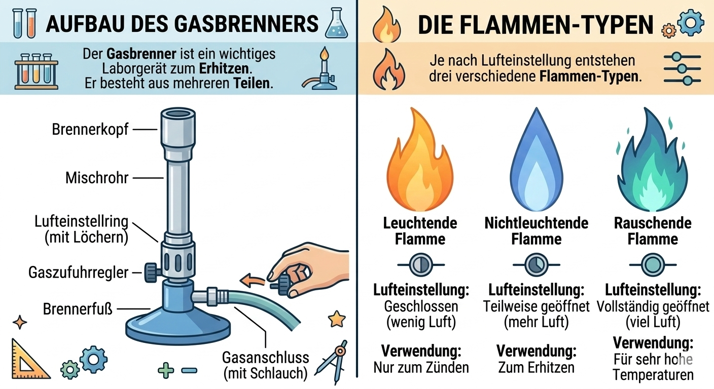

In diesem Modul lernst du den Aufbau des Gasbrenners, das sichere Einstellen der Flamme
und den Grund, warum Flammen unterschiedlich heiß sind.

Lehrplanbezug Niedersachsen (Gymnasium Sek I)
Das Modul orientiert sich am Kerncurriculum Chemie. Für den Einstieg sind besonders wichtig:
sicheres Experimentieren, Beobachten und Beschreiben sowie das Deuten von Verbrennungsvorgängen.
Du nennst wichtige Teile des Gasbrenners und ihre Funktion.
Du stellst die Flamme passend und sicher ein.
Du erklärst einfach, warum mehr Luft zu einer heißeren Flamme führt.
Du entscheidest in Alltagssituationen, welche Flamme sinnvoll ist.